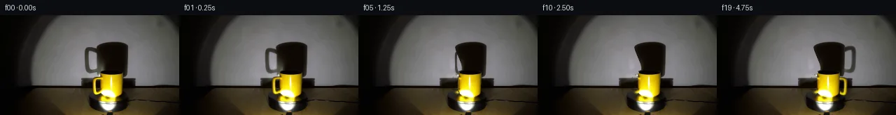
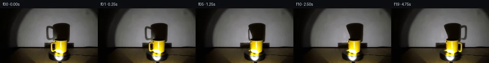
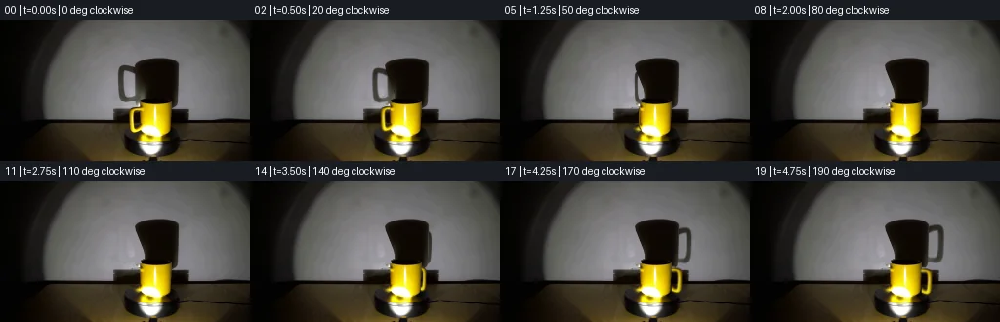
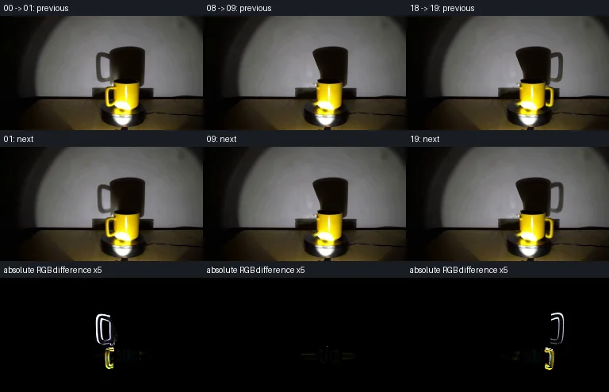

V0 · 初版
2026-11-05T03:42:41.501498+00:00 · RGB d97db8badee9
![]()
Observable Generation Trace
把最终像素视频、Harness 冻结的每轮候选、真实工具事件和 Agent 自述放在同一页。可观测证据与模型自述分开标记，避免把“模型说它检查过”误当成真实工具调用。
![首帧]()
Static locked-off single-shot with fixed frame throughout filmed with constant framerate in real-time. The scene shows a realistic scientific demonstration. The scene only contains the described setup and actions. The yellow mug sits on the black, clockwise-rotating platform, and the spotlight points toward the yellow mug. The yellow mug rotates clockwise on the black platform while the spotlight casts a large shadow on the wall behind it.
首帧显示在左侧播放器初始画面。Track 权限、隔离和 tensor 一致性来自 run manifest，而不是 METHOD.md。
默认勾选初版和最终版；可选其他版本一起同步播放。仅检查图更新的连续重复快照已合并，回退旧视频仍保留为一次修订。
Observable events
来源：events.jsonl + run manifest
此 Track 禁止读取输出图片。逐轮预览由外部 Harness 自动冻结，只用于事后审计，生成 Agent 当时看不到这些页面。
Frozen candidates
每张图来自该 round 的真实 00 / 01 / 05 / 10 / 19 帧

pixels d7d18f0e1cf685e8 · code d9629c225713aed7
--- previous/generate.py
+++ current/generate.py
@@ -0,0 +1,219 @@
+"""Photograph-preserving local pixel continuation; no renderer or model inputs."""
+from pathlib import Path
+import json
+import numpy as np
+import cv2
+from PIL import Image, ImageDraw
+from scipy.ndimage import gaussian_filter, binary_dilation, binary_closing
+from artifact_io import save
+
+ROOT = Path(__file__).resolve().parent
+H, W = 144, 256
+Y, X = np.mgrid[:H, :W].astype(np.float32)
+SOURCE = np.asarray(Image.open(ROOT / 'first_frame.png').convert('RGB'))
+A = SOURCE.astype(np.float32)
+
+
+def polygon(points):
+ s = 4
+ canvas = Image.new('L', (W*s, H*s), 0)
+ ImageDraw.Draw(canvas).polygon([(round(x*s), round(y*s)) for x, y in points], fill=255)
+ return np.asarray(canvas.resize((W, H), Image.Resampling.LANCZOS)).astype(np.float32)/255
+
+
+def warp(data, scale_x, scale_y, pivot, dy=0):
+ px, py = pivot
+ m = np.array([[scale_x, 0, px*(1-scale_x)],
+ [0, scale_y, py*(1-scale_y)+dy]], dtype=np.float32)
+ return cv2.warpAffine(data, m, (W,H), flags=cv2.INTER_LINEAR,
+ borderMode=cv2.BORDER_CONSTANT, borderValue=0)
+
+
+def wall_estimate():
+ # Interpolate only the smooth light field from unoccluded wall RGB samples.
+ xx, yy = (X-150)/70, (Y-60)/40
+ features = np.stack([xx**i*yy**j for i in range(5) for j in range(5-i)], axis=-1)
+ clean = (X>91)&(X<225)&(Y>20)&(Y<90)
+ clean &= ~((X>117)&(X<187)&(Y>36))
+ # The opening in the original shadow is an additional observed wall sample.
+ clean |= (X>=129)&(X<=135)&(Y>=57)&(Y<=73)
+ clean &= A.mean(2)>95
+ mat, values = features[clean], A[clean]
+ weights = np.ones(len(mat))
+ for _ in range(5):
+ coef = np.linalg.lstsq(mat*weights[:,None], values*weights[:,None], rcond=None)[0]
+ err = np.sqrt(np.mean((mat@coef-values)**2,axis=1))
+ weights = np.minimum(1, 4/np.maximum(err,1e-5))
+ wall = features@coef
+ # Small fixed photo texture from an adjacent, unobstructed patch, no new inputs.
+ residual = A-gaussian_filter(A, sigma=(1.4,1.4,0))
+ texture = np.roll(residual, 41, axis=1)
+ wall += np.clip(texture,-3,3)*.6
+ rms = float(np.sqrt(np.mean((mat@coef-values)**2)))
+ return np.clip(wall,0,255), rms
+
+
+WALL, WALL_RMS = wall_estimate()
+# Split the photographed handle shadow from the dominant cylindrical shadow.
+shadow_body_left = np.interp(Y[:,0],
+ [0,38,40,43,46,50,55,60,65,70,75,78,80,83,88,144],
+ [160,153,147,141,138,139,141,143,145,147,148,148,144,145,145,145])[:,None]
+shadow_support = polygon([(124,44),(132,44),(141,47),(144,55),(147,66),
+ (150,78),(147,83),(136,86),(125,83),(119,77),(117,54)])
+shadow_support *= np.clip((shadow_body_left-X)/.9,0,1)
+shadow_support *= np.clip((89-Y)/3,0,1)
+# Preserve the original wall hole. Remove measured attenuation, not a colored cutout.
+shadow_strength = np.maximum(0, 1 - A / np.maximum(WALL,1))
+shadow_strength = shadow_strength.mean(2)
+shadow_remove = shadow_support*np.clip((shadow_strength-.02)/.08,0,1)
+PLATE = A*(1-shadow_remove[:,:,None]) + WALL*shadow_remove[:,:,None]
+SHADOW_ATTEN = np.clip(1-A/np.maximum(PLATE,1),0,.96)
+SHADOW_ATTEN *= (shadow_remove>0)[:,:,None]
+
+# Recover the table/turntable underneath the initially left-facing handle.
+handle_zone = (X>=130)&(X<=142)&(Y>=89)&(Y<=115)
+yellow = (A[:,:,0]>70)&(A[:,:,1]>40)&(A[:,:,2]<A[:,:,1]*.69)
+handle_core = binary_closing(yellow&handle_zone, structure=np.ones((2,2)))&handle_zone
+handle_outer = binary_dilation(handle_core, iterations=1)&(X>=130)&(X<=143)&(Y>=88)&(Y<=115)
+handle_alpha = gaussian_filter(handle_outer.astype(np.float32), .45)
+handle_alpha *= np.clip((143.35-X)/.7,0,1)
+handle_alpha *= np.clip((116-Y)/1.1,0,1)
+# The stable fixture begins at x~144 in these rows; keep its RGB samples intact.
+handle_alpha[(Y>=108)&(X>=143)] = 0
+inpaint_mask = (handle_alpha>.025).astype(np.uint8)*255
+inpainted = cv2.inpaint(np.uint8(np.clip(PLATE,0,255)), inpaint_mask, 3, cv2.INPAINT_TELEA).astype(np.float32)
+# On the flat black rim, use the intact row on the left so the horizontal edge
+# continues underneath the old handle, without smeared yellow color.
+for y in range(89,106):
… diff truncated; 132 more lines …
pixels 6c1a42a51414810f · code 1fafc1db319e1527
--- previous/generate.py
+++ current/generate.py
@@ -117,6 +117,13 @@
turn_mask *= (1-body_occlusion)
turn_texture = PLATE-gaussian_filter(PLATE,sigma=(.8,1.4,0))
turn_texture = np.clip(turn_texture,-5,5)
+# Advect only faint ceramic surface grain; illumination and specular highlights
+# remain fixed in camera space because a round cylinder has unchanged normals.
+ceramic_grain = np.clip(A-gaussian_filter(A,sigma=(.9,.9,0)),-2.5,2.5)
+phi = np.arcsin(np.clip((X-159)/15.5,-1,1))
+ceramic_mask = np.clip((X-144)/1.5,0,1)*np.clip((173-X)/1.5,0,1)
+ceramic_mask *= np.clip((Y-88)/2,0,1)*np.clip((108-Y)/2,0,1)
+ceramic_mask *= yellow
def render(t):
@@ -129,6 +136,13 @@
mapy = (pcy+ry*(-sn*u+cs*v)).astype(np.float32)
grain = cv2.remap(turn_texture,mapx,mapy,cv2.INTER_LINEAR,borderMode=cv2.BORDER_REFLECT_101)
out += .55*turn_mask[:,:,None]*(grain-turn_texture)
+ # Mirror the observed front grain periodically for the unseen circumference.
+ # This is a bounded local texture extrapolation, not hidden image retrieval.
+ material_phi = np.arcsin(np.sin(phi-theta))
+ gx = (159+15.5*np.sin(material_phi)).astype(np.float32)
+ moved_grain = cv2.remap(ceramic_grain,gx,Y,cv2.INTER_LINEAR,
+ borderMode=cv2.BORDER_REFLECT_101)
+ out += .7*ceramic_mask[:,:,None]*(moved_grain-ceramic_grain)
# Perspective from the fixed spotlight: receding handle shrinks in the wall
# projection and shifts down toward the cylindrical shadow base.pixels 6c1a42a51414810f · code 1fafc1db319e1527
No generate.py text change in this frozen round.
pixels 6c1a42a51414810f · code a386055bdb51ef14
--- previous/generate.py
+++ current/generate.py
@@ -8,6 +8,7 @@
from artifact_io import save
ROOT = Path(__file__).resolve().parent
+(ROOT / '.tmp').mkdir(exist_ok=True)
H, W = 144, 256
Y, X = np.mgrid[:H, :W].astype(np.float32)
SOURCE = np.asarray(Image.open(ROOT / 'first_frame.png').convert('RGB'))
@@ -187,7 +188,7 @@
sheet.paste(Image.fromarray(frames[t]),(x,y+21))
sheet.save(ROOT/'inspection.png')
# Three temporal comparisons, including first and final adjacent transitions.
-check=Image.new('RGB',(768,492),(25,28,35)); draw=ImageDraw.Draw(check)
+check=Image.new('RGB',(768,494),(25,28,35)); draw=ImageDraw.Draw(check)
for col,(p,q) in enumerate([(0,1),(8,9),(18,19)]):
x=col*256
draw.text((x+5,4),f'{p:02d} -> {q:02d}: previous',fill='white')pixels 6c1a42a51414810f · code fb52ab80c01dcd53
--- previous/generate.py +++ current/generate.py @@ -1,5 +1,7 @@ """Photograph-preserving local pixel continuation; no renderer or model inputs.""" from pathlib import Path +import sys +sys.dont_write_bytecode = True import json import numpy as np import cv2
Final visual checks
Harness 保存的最终产物


Agent claims
以下文字由生成 Agent 撰写，不等同于工具证据
The input is RGB, 256 × 144. It has a dim, warm tabletop below approximately y=104 and a grey wall with a fixed spotlight pool above it. Numeric sampling, connected components, and text maps of RGB categories were used; no image display or image viewing tool was used.
Measured coordinates (origin at the upper left):
The planned motion is uniform clockwise rotation as seen from above: 40 degrees/second, sampled every 0.25 seconds. An initially left-facing handle moves toward the rear, is occluded by the round mug near the quarter-turn, and emerges on the right. A circular, unmarked mug retains almost the same lit front silhouette; handle position, occlusion, turntable texture and projected handle shadow reveal rotation. The camera, wall, light and table stay locked. The physical projection changes handle width and vertical position as its distance from the lamp changes. No additional objects or actions are introduced.
| Frame | Time (s) | Rotation | Planned event |
|---|---|---|---|
| 00 | 0.00 | 0° | Exact original RGB pixels; handle and large shadow loop left. |
| 01 | 0.25 | 10° | Handle starts receding, slight foreshortening; shadow contracts. |
| 02 | 0.50 | 20° | Left handle moves toward body and slightly upward. |
| 03 | 0.75 | 30° | Left opening narrows; shadow opening narrows. |
| 04 | 1.00 | 40° | Handle partly occluded by body. |
| 05 | 1.25 | 50° | Small visible left handle portion; shadow merges toward body. |
| 06 | 1.50 | 60° | Rear handle is mostly hidden. |
| 07 | 1.75 | 70° | Handle behind cylindrical body. |
| 08 | 2.00 | 80° | Rear occlusion; steady platform motion. |
| 09 | 2.25 | 90° | Handle points directly rearward and is hidden. |
| 10 | 2.50 | 100° | Rear handle passes right of center, still hidden. |
| 11 | 2.75 | 110° | Handle remains largely occluded. |
| 12 | 3.00 | 120° | Right-side emergence begins. |
| 13 | 3.25 | 130° | Small right handle and corresponding shadow appear. |
| 14 | 3.50 | 140° | Right loop widens. |
| 15 | 3.75 | 150° | Right handle opening grows. |
| 16 | 4.00 | 160° | Nearly side-on right loop; larger right wall shadow. |
| 17 | 4.25 | 170° | Right handle approaches full width. |
| 18 | 4.50 | 180° | Handle fully right-facing, opposite the first frame. |
| 19 | 4.75 | 190° | Handle starts moving toward the front on the right. |
Implementation will use local NumPy/Pillow/OpenCV/SciPy pixel operations: recover a local background under the original handle and its wall shadow, preserve the sampled photographic mug/body/light, warp extracted handle geometry under analytic rotation and occlusion, and project the handle's attenuation onto the fixed wall. Output verification will be numeric, including exact first-frame and PNG/tensor equivalence, motion locality and temporal differences. Contact sheets will be generated as artifacts, without claiming visual review.
This is a local, photograph-preserving pixel animation built with Python, NumPy, Pillow, OpenCV and SciPy. The only scene inputs were first_frame.png and prompt.txt. No network, reference images, external models, external rendering engines, subagents, image Read/View tools, or image display were used. Scene understanding and verification used numeric RGB samples, component measurements, text maps and array comparisons. OBSERVATION.md was written before the generation program, with measured scene locations and a 20-frame plan.
The animation uses a cylindrical mug proxy with axis x=159, rotating uniformly clockwise as seen from above. Each frame advances 10 degrees, equivalent to 40 degrees/second. The initially left-facing handle recedes toward the rear, becomes hidden by the body, and emerges on the right. Sample times are 0.00 through 4.75 seconds at 0.25-second intervals; each is displayed for 0.25 seconds, giving a five-second clip.
The original mug body, wall, tabletop, illumination and foreground spotlight are retained as photographic pixels. A circular, unmarked cylinder has the same silhouette and surface-normal field as it rotates, so the principal body shading and specular highlight stay fixed. Only a faint, bounded high-frequency ceramic grain field is moved using cylindrical angular coordinates. Unseen ceramic grain is approximated by periodically mirroring the observed front grain; no unseen image is retrieved.
The original left handle is separated with a local yellow-color predicate, morphological operations and a feathered alpha. Its premultiplied photographed RGB signal is extracted. Pixels underneath it are recovered with local inpainting and intact horizontal row samples from the black platform. The handle signal is warped horizontally by cos(theta), changes vertical position and scale as it recedes, and is occluded by the measured mug silhouette. A small left/right intensity falloff approximates the fixed spotlight's illumination. The lower fixture is composited back from the original photograph so its bright core does not move.
The moving handle shadow is an attenuation field, rather than a copied patch of wall color. A fourth-degree polynomial RGB fit to unoccluded wall samples recovers the smooth light pool beneath the original handle shadow. Its fit RMS is approximately 2.09 RGB levels. Small fixed texture comes from an adjacent unoccluded portion of the same photograph. The large cylindrical body shadow is retained. The handle attenuation is warped using the same angle, a depth-dependent projection scale 1/(1+0.18*sin(theta)), and a vertical projection offset. It joins the existing cylindrical umbra without multiplying its deepest shadow twice. This is an analytic perspective approximation, not a calibrated three-dimensional light transport simulation.
The turntable remains centered. Subtle photographed surface grain rotates in its elliptical camera projection while the circular rim and illumination remain fixed. A final refinement added faint moving ceramic grain to retain physical surface motion during the interval in which the handle is behind the body. The camera, background and spotlight have no global transforms or temporal flicker.
generate.py deterministically regenerates the output by running python -B generate.py from this workspace. The supplied artifact_io.py and player template are output helpers. Frame 00 is explicitly replaced with the original RGB array after compositing to ensure exact equality.
The required artifacts are:
frames/00.png through frames/19.png: twenty RGB PNGs, each 256 × 144.pixels.npz: key pixels, uint32 tensor of shape (144, 256, 20). Each element is packed as 0xRRGGBB, with frame index on the last axis.index.html: standalone player with all pixel data embedded, 250 ms playback intervals, seeking, replay and loop controls.inspection.png: eight-frame contact sheet with actual sample times and clockwise angles.transition_check.png: previous/next pairs for 00→01, 08→09 and 18→19, with absolute RGB differences amplified five times.OBSERVATION.md, generate.py and this METHOD.md: measurements, event plan and implementation documentation.Numeric validation passed: all twenty PNGs equal their corresponding packed tensor slices; frame 00 exactly equals the original RGB image; all twenty frames are distinct; and all twenty decoded HTML frames exactly equal the PNGs. Every change lies within x=119–200, y=42–116. All rows y≥117 remain unchanged. The bright foreground spotlight core at x=147–161, y=110–115 has zero channel difference across every frame. Adjacent mean absolute RGB differences range from about 0.022 to 1.077 levels over the whole frame; lower differences occur during the rear handle's occlusion. The initial left handle loses its exposed yellow region and the right handle gains one near the final half-turn, confirming the planned progression numerically. Machine-readable generation checks are saved in .tmp/verification.json.
The contact sheets were created but were not viewed with an image tool. No visual review is claimed. Geometry, unseen texture and projection are approximations inferred from the first frame; the method does not claim a complete physical reconstruction.